排序檢查
綠：GT 正例；橘：GT 負例；灰：ignore；紅：融合 Top-1。圖片是抽樣案例，不代表全體比例。
摘要 · 逐描述結果 · 負例覆蓋
排序案例
Ch01_2022_07_09_13_00_00_000023232.jpg · 單色白色的船 · wrong_object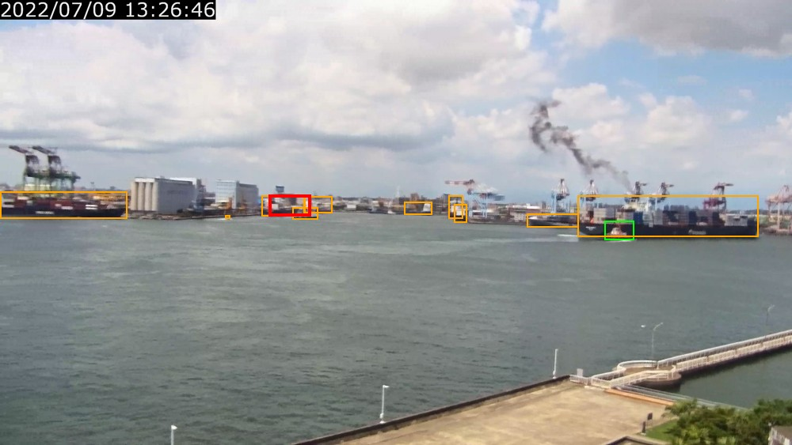
Ch01_2022_07_09_13_00_00_000023328.jpg · 單色深紅色的船 · wrong_object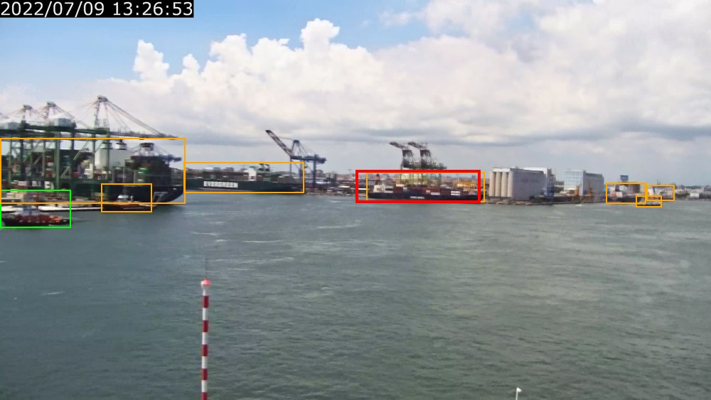
2022_12_08_10_05_00_551770_1.jpg · 單色灰色的船 · localization_failure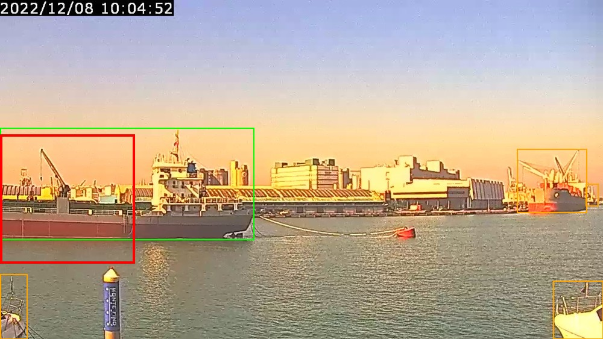
ch007_20240923175011_0000002550.jpg · 含灰白的船 · localization_failure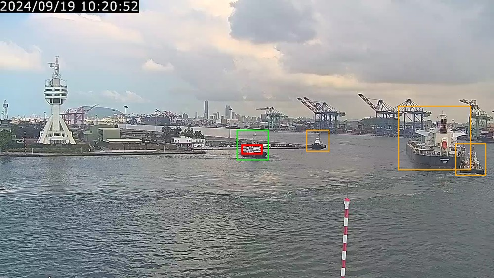
1720199108.jpg · 單色灰色的船 · wrong_object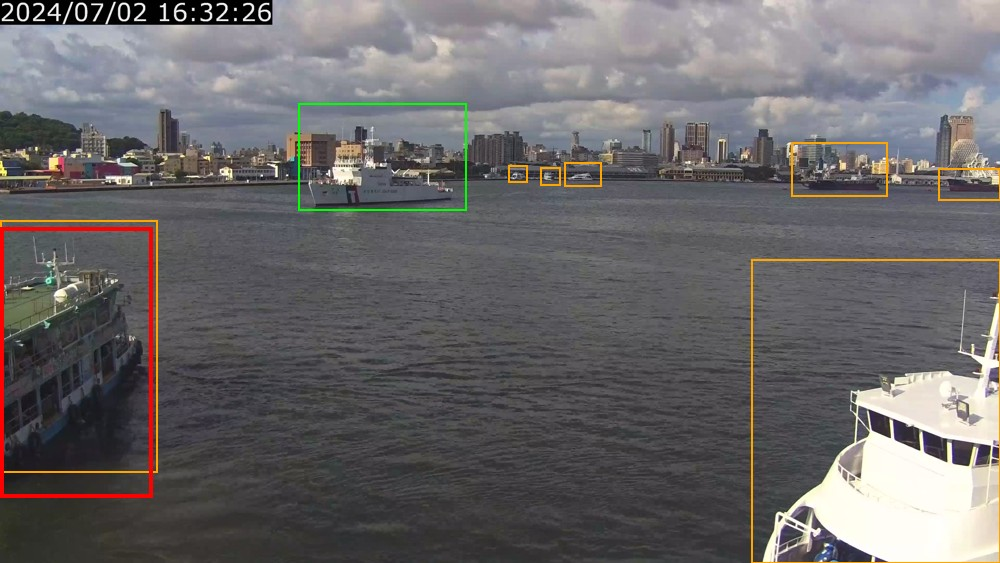
2022_12_08_10_37_46_058511_1.jpg · 單色白色的船 · wrong_object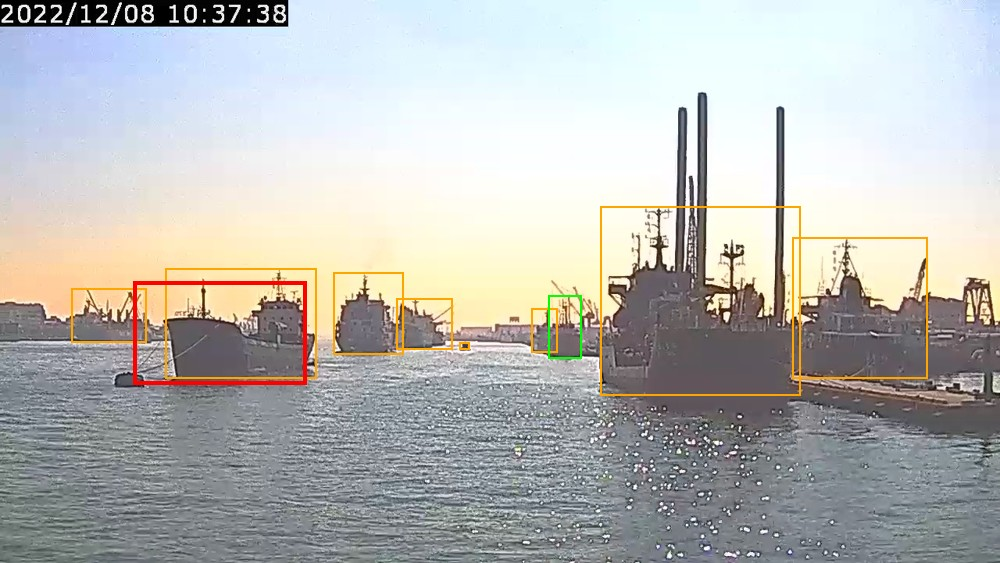
2022_12_08_10_56_14_854681_1.jpg · 紅色黃色相間的船 · wrong_object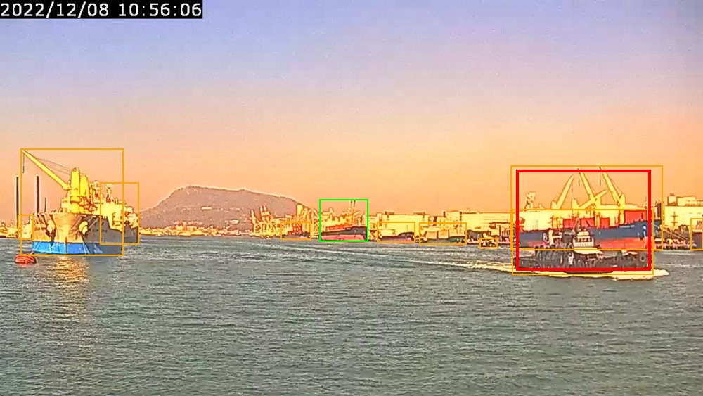
Ch01_2022_03_22_17_00_00_000010350.jpg · 綠色藍色白色相間的船 · correct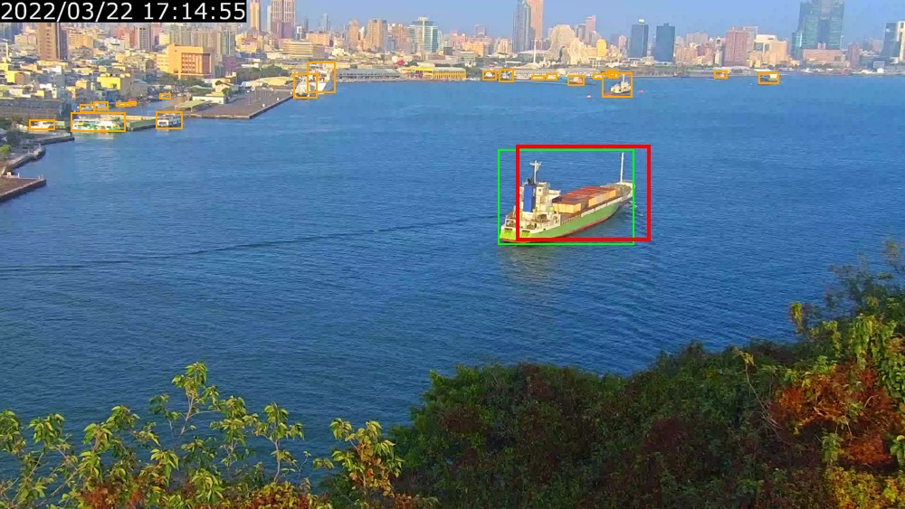
Ch01_2022_01_02_15_00_01_000082544.jpg · 單色藍色的船 · wrong_object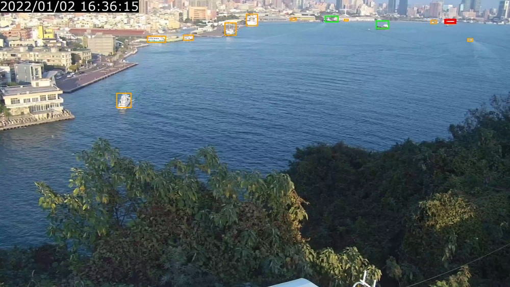
Ch02_2022_07_09_10_00_00_000022770.jpg · 單色黑色的船 · wrong_object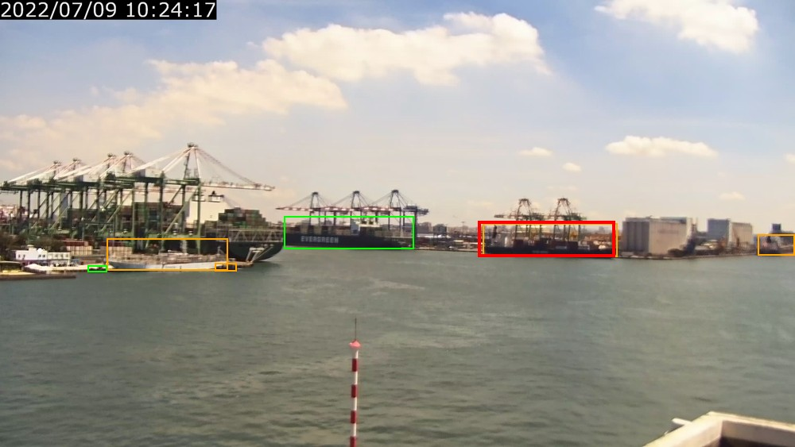
1720192457.jpg · 單色灰白的船 · wrong_object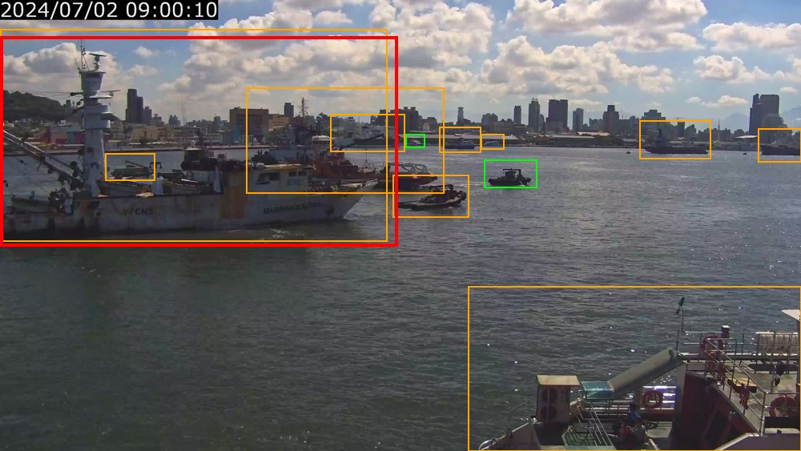
20240619_frame_1628.jpg · 單色黑色的船 · wrong_object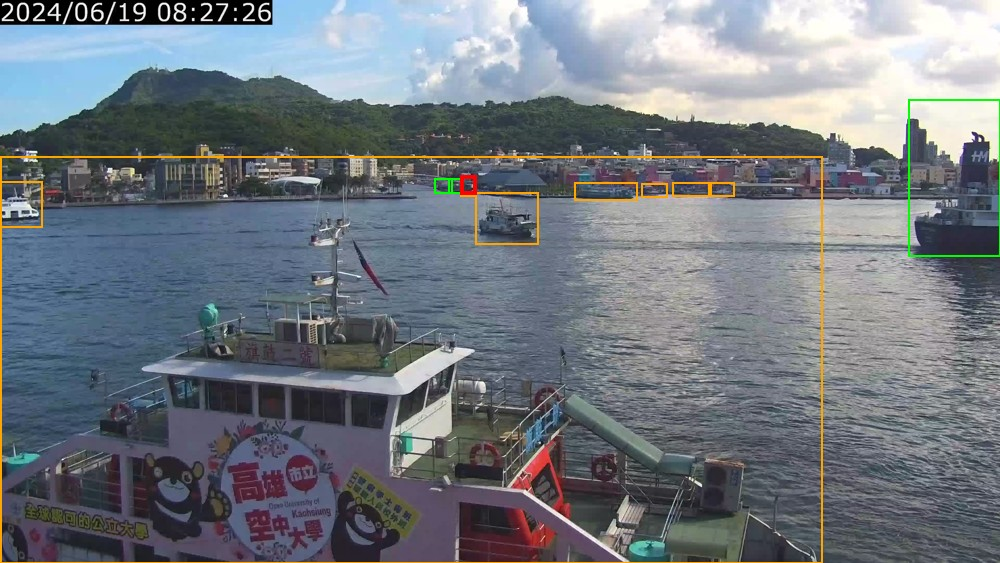
標記中的區分樣本
紫框：此組對照涉及的物件；正負關係請依描述與 coverage.json 判讀。
{"split": "train", "filename": "1695792451082856.jpg", "kind": "same_predicate_different_colors", "phrases": ["單色灰色的船", "單色白色的船"], "object_ids": ["object_0000", "object_0001", "object_0002"]}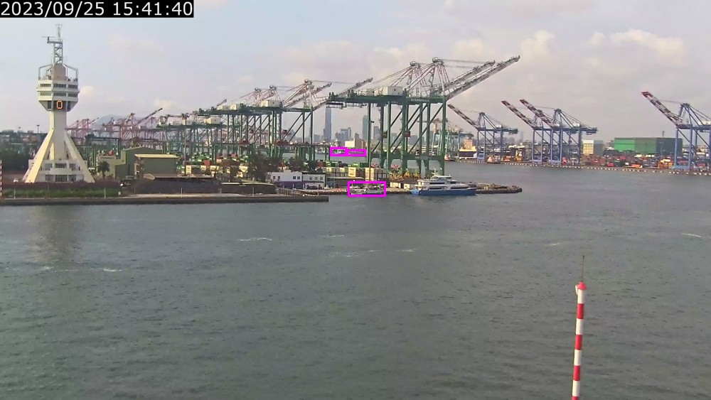
{"split": "train", "filename": "16957924894605358.jpg", "kind": "same_color_objects", "phrase": "黑色紅色相間的船", "object_ids": ["object_0000", "object_0004"]}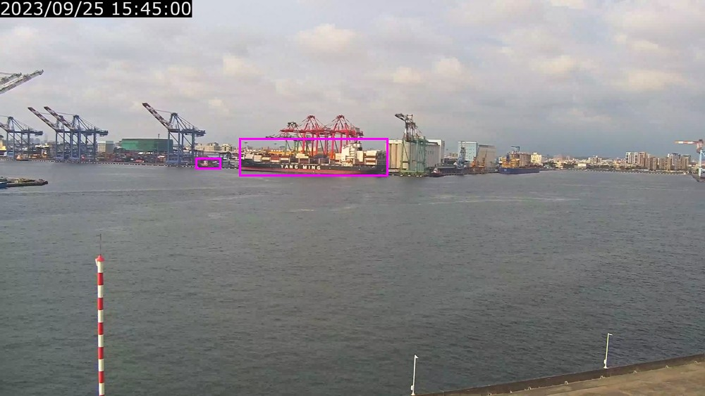
{"split": "train", "filename": "16957924894605358.jpg", "kind": "single_vs_contains", "phrases": ["單色黑色的船", "含黑色的船"], "object_ids": ["object_0000"]}{"split": "val", "filename": "169579252186097.jpg", "kind": "same_predicate_different_colors", "phrases": ["單色灰色的船", "單色白色的船"], "object_ids": ["object_0000", "object_0001", "object_0002", "object_0003"]}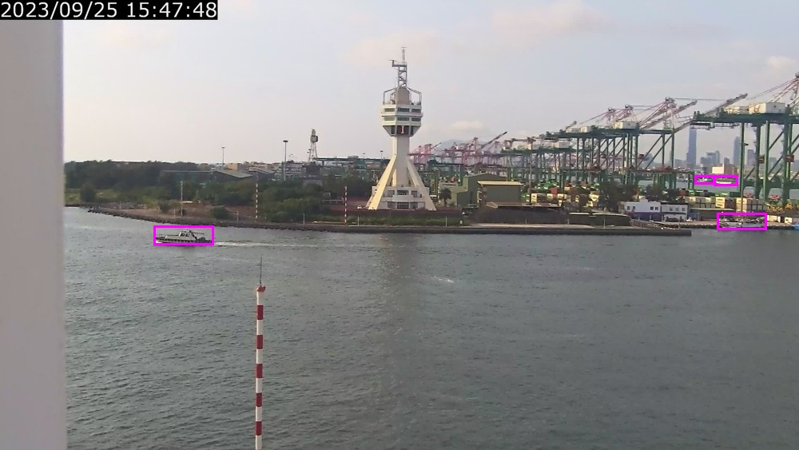
{"split": "val", "filename": "16957926134172726.jpg", "kind": "same_color_objects", "phrase": "藍色白色相間的船", "object_ids": ["object_0000", "object_0003"]}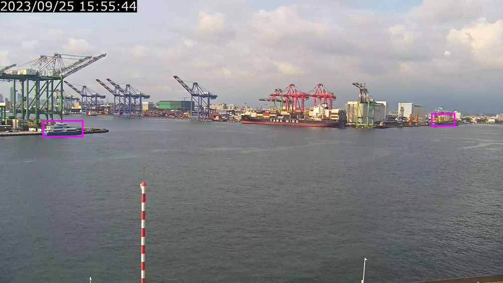
{"split": "val", "filename": "16957926134172726.jpg", "kind": "single_vs_contains", "phrases": ["單色藍色的船", "含藍色的船"], "object_ids": ["object_0000"]}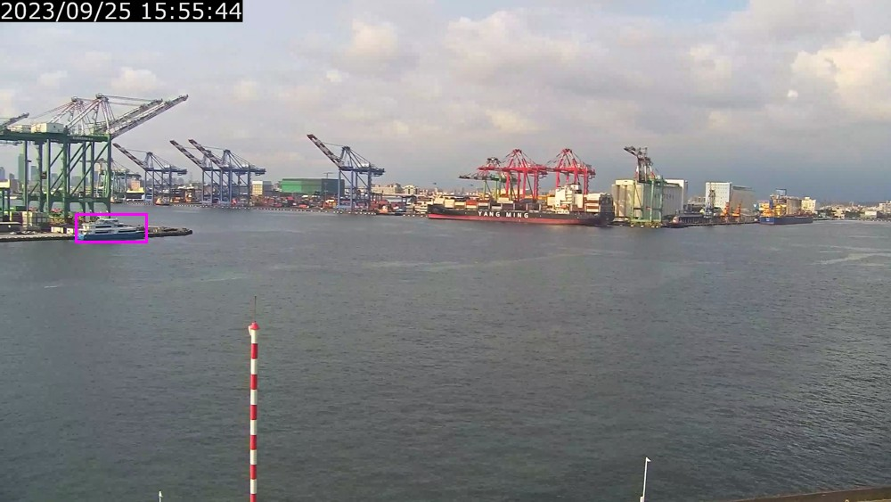